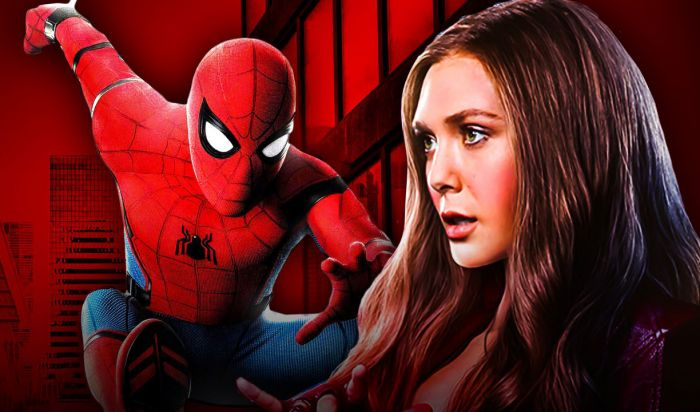
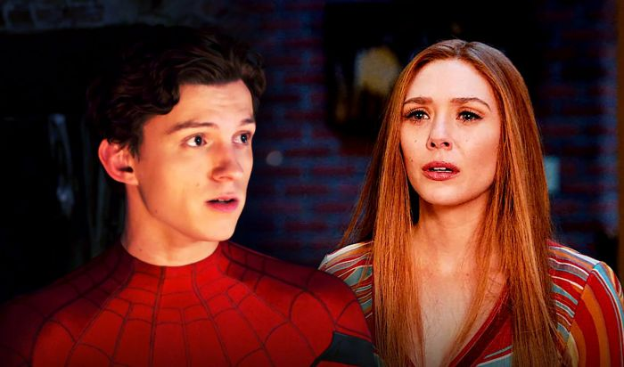

Pada 2020 lalu, kita kerap disuguhkan dengan rumor kalau film Spider-Man 3 akan turut dibintangi oleh sejumlah aktor Hollywood ternama. Mulai dari Jaime Foxx sebagai Electro, comeback-nya Alfred Molina sebagai Doctor Octopus, hingga kembalinya Tobey Maguire dan Andrew Garfield. Bahkan, belum lama ini beredar kabar kalau film tersebut akan turut menampilkan Scarlet Witch.
Hal ini pertama kali terungkap lewat wawancara Elizabeth Olsen selaku pemeran Wanda Maximoff alias Scarlet Witch dengan Capital UK. Pada sesi tersebut, sang pewawancara mengungkapkan banyaknya karakter yang dikabarkan akan hadir dalam film tersebut. Lalu, dia pun kemudian menanyakan kepada Olsen apakah sang aktris akan ikut muncul sebagai Scarlet Witch di film tersebut.

Olsen lalu mengungkapkan bahwa dia kemungkinan akan muncul sebagai Scarlet Witch dalam Spider-Man 3 jika melihat banyaknya aktor yang ikut terlibat di film tersebut. Meski begitu, Olsen juga menambahkan bahwa dia masih belum yakin karena sampai saat ini belum terlibat di proses produksinya

Sebenarnya Elizabeth Olsen memiliki peluang besar untuk hadir sebagai Scarlet Witch di film ketiga sang Manusia Laba-laba tersebut meski hanya sekadar menjadi cameo. Pasalnya, serial WandaVision yang dibintanginya akan memiliki keterkaitan dengan film Spider-Man 3 dan juga Doctor Strange 2. Apalagi, Benedict Cumberbatch selaku pemeran Doctor Strange sudah dikonfirmasi akan hadir di Spider-Man 3.
Nah, apakah menurut kalian Scarlet Witch akan muncul dalam film ketiga sang Manusia Laba-laba di MCU tersebut? Share pendapat kalian di bawah, ya!
Tetap Update Bersama Kami!
Subscribe Newslater NontonYuk! dan kamu akan mendapatkan
Info Film Paling Up to Date
Berita Terbaru Selebritis Favoritmu
Berkesempatan mendapatkan Give Away Tiket Film setiap bulannya!